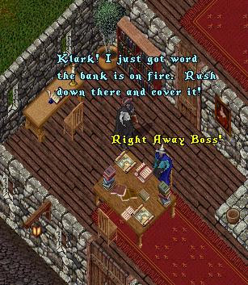
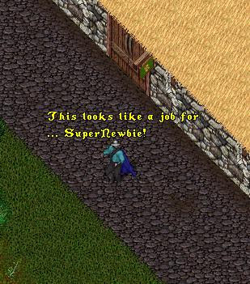
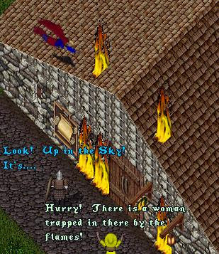
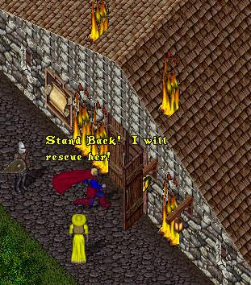
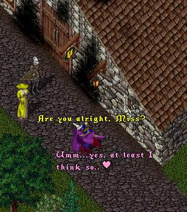
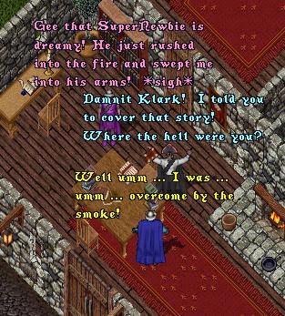
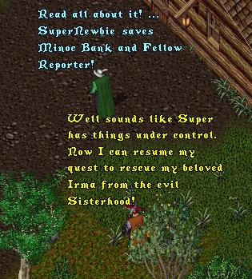

Episode 97: Son of ImaNewbie (Part 6). When we last left ImaNewbie and SuperNewbie they had parted ways, SuperNewbie donning the disguise of the mild-mannered Klark Bent, town cryer in Minoc and ImaNewbie heading into self-exile in the wilds of Britannia to prevent his recapture.
As this episode opens we find Klark Bent and his editor
'Parry Whyte' at Town Cryer headquarters.


Donning his SuperNewbie robes and taking flight,
he quickly arrives at the scene of the fire.

Hearing the cries from the onlookers of a damsel
trapped in the burning bank, he rushes to save
her, little knowing that the woman is none-other
than his fellow town cryer, the lovely 'Lois Pain'!

Sweeping the helpless Lois into his arms, he
runs outside, dousing the fires with one
mighty puff of his super-breath.

Later that day back at Town Cryer headquarters,
Lois recounts the daring rescue while Parry chews
out Klark for not getting the story.

Meanwhile in a secluded outpost somewhere in
Britannia, ImaNewbie, still laying low, hears
the news of his son's heroic deeds.
